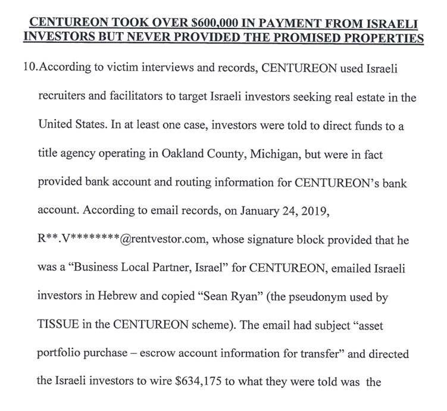
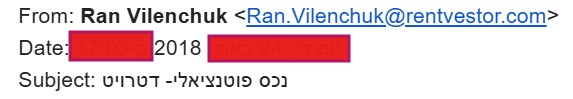

Disclaimer: This website is intended for informational and educational purposes only. All information presented here is based on publicly available data and personal experiences of individuals. Visitors are encouraged to do their own due diligence.
Ran Vilenchuk is known to have been associated with Centureon Investments, a Detroit-based real estate company that marketed investment properties to international buyers. He was involved as the Israeli representative and local sales and management contact. He introduced himself as a Business Local Partner in Israel, as shown in the email screenshot below.
Ran Vilenchuk promoted houses in Detroit as fully renovated and occupied by rent-paying tenants. However, many investors discovered the homes were vacant, severely damaged, or even uninhabitable. His business partner, Sean Tissue (also known as Sean Ryan), was later convicted of wire fraud in the U.S.
"According to court documents, Tissue orchestrated a substantial real estate investment fraud scheme from approximately 2015 through 2021. Tissue and those working with him made numerous fraudulent representations to potential investors from Israel."
This case is further supported by evidence from a criminal complaint filed in the U.S. District Court. According to that complaint, an individual using an email with the domain @rentvestor.com and a signature identifying himself as the “Business Local Partner, Israel” for CENTUREON was involved in directly instructing Israeli investors to wire over $600,000. The domain was associated with Sean Tissue’s operation, and this email identity strongly points to Ran Vilenchuk.
📄 Click here to view the full criminal complaint PDF
"I bought multiple homes based on fake photos and rent rolls. Many were uninhabitable or had no roof." — Investor A
"The income I received was a lie. There were no tenants at all." — Investor B
"When I asked Ran about what happened to my properties, he became extremely aggressive and even threatening." — Investor C
"This scam destroyed me. I lost 20 years of hard-earned savings investing through him." — Investor D
If you’re considering any business dealings with Ran Vilenchuk, we urge you to research public court records, consult a legal advisor, and consider these past allegations carefully.
If you have information to share or would like to submit a testimonial, please email:
📧 ranvilenchuktips@proton.me